Case study · Design systems
Design to Code: A Token Workflow
A design system that stays in sync with code by itself. Tokens are defined with Claude, live as Figma Variables, and reach GitHub with one click. A build turns them into CSS, and components are read straight from Figma via the Figma MCP.
- Role
- UX/UI Designer, end to end: concept, token architecture, tooling and rollout
- Context
- Concept and implementation to optimize a client's design system, built on Atomic Design
- Tools
- Figma, Figma MCP, Claude, GitHub
- Scope at the client
- 250+ tokens, 12 text styles, 20+ atoms, 10+ molecules, organisms
- This rebuild
- 202 tokens, 9 text styles, 4 atoms, 1 molecule, 1 organism
01 · The problem
Design and development drifted apart
The design system had grown too big to see what mattered.
- Sync: every change in Figma had to be carried into code by hand. That meant slow handoffs and many follow-up questions between design and development.
- Bloat: the library held far more components and styles than the product used. Nobody could say which ones were really needed.
How do you keep a design system in sync with development efficiently, and use that process to find out what the system really needs?
02 · My role
From token structure to collaboration with development
I developed the process and introduced it for a client.
- Figma is the source of truth. Tokens and components are defined there, with Claude as a partner for structure and naming.
- Development works from a ready repository. Developers take the tokens and components from GitHub, run their QA, and the result flows back into Figma.
- A defined set of tokens. Every token has a place in a layer and a reason to exist.
This case study is my own rebuild of that workflow. The client used the Figma REST API; here I built a Figma plugin on the Plugin API instead, plus my own documentation site.
03 · The approach
One source of truth, two tracks, one QA routine
Where a standard exists, use it. Where none fits, build the gap.
- Tokens, fully automated. Claude helps structure the tokens, Figma holds them as Variables, my plugin commits them to GitHub, and a GitHub Action builds
tokens.css. - Components, via the Figma MCP. Claude reads a Figma component with its bound variables, flags binding errors for a design QA in Figma, then translates it into code that reuses existing components.
The QA routine
Every component is checked against its tokens before it becomes code. A screenshot shows how a component looks; the MCP shows what it is bound to.
- ReadClaude reads the component via the Figma MCP, including every bound variable.
- CompareForeign variables, mixed-up tokens and hard-coded values are flagged.
- Fix in FigmaErrors are corrected at the source, never patched in code.
- Read againA second read confirms the component is clean, then it is translated into code.
The scope of this rebuild stays small on purpose: 4 atoms, 1 molecule and 1 organism, following Atomic Design. It is the same principle as at the client: build only what a real use case needs.
04 · Tokens in three layers
114 primitives, 53 semantic, 35 component tokens
Each layer is smaller than the one below, and each only points to the one beneath it. A change travels up without touching anything else.
| Layer | Example | What a change affects |
|---|---|---|
| Primitive | color/purple/600 | Everything that uses this value |
| Semantic | color/action/primary/bg/default | Every primary action |
| Component | button/primary/bg/default | Only the button |

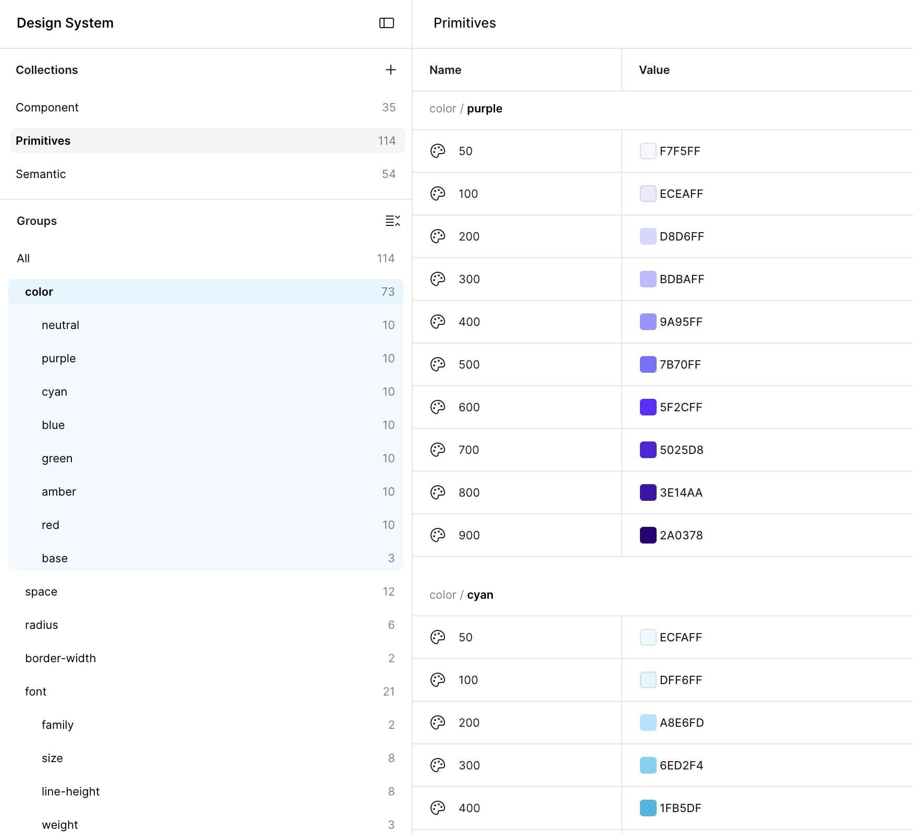

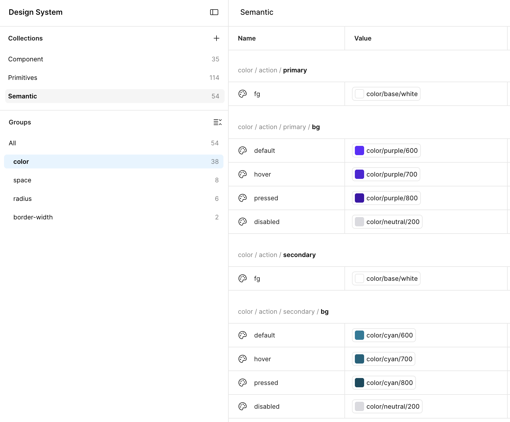
color/action/primary/bg/default points to purple/600. Change the alias once, every primary action follows.A few decisions that shaped the set:
- Space is named by pixel value (
space/16= 16 px), so nobody has to translate. - Scopes per group: a color variable only shows up where colors fit, which keeps the Figma pickers short.
- Contrast first: the secondary action uses
cyan/600instead of500to meet WCAG AA.
Every token is listed on one page, with its Figma name, CSS variable, alias and value: browse all tokens.
05 · From Figma to CSS in one click
Token Bridge, my Figma plugin
Token Bridge moves tokens both ways. Figma's Variables REST API needs an Enterprise plan, so the plugin uses the Plugin API, which runs on every plan.
- Import: token JSON from Claude becomes Figma Variables, each one an alias of the layer below. Missing references are reported, which doubles as a naming check.
- Export: all Variables and Text Styles go to GitHub as W3C design tokens, in one commit. No changes, no commit.
- Access: the GitHub token is stored only locally in Figma, never in the file or the repository.

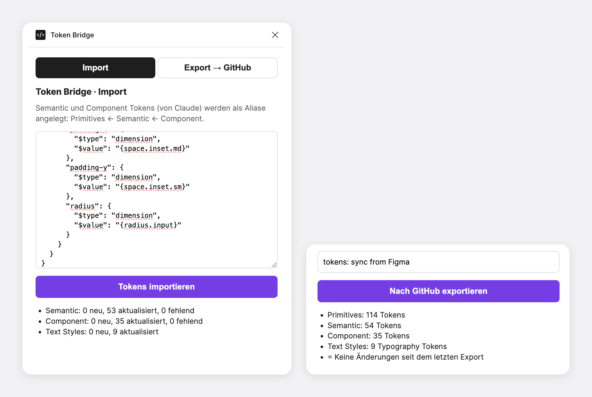

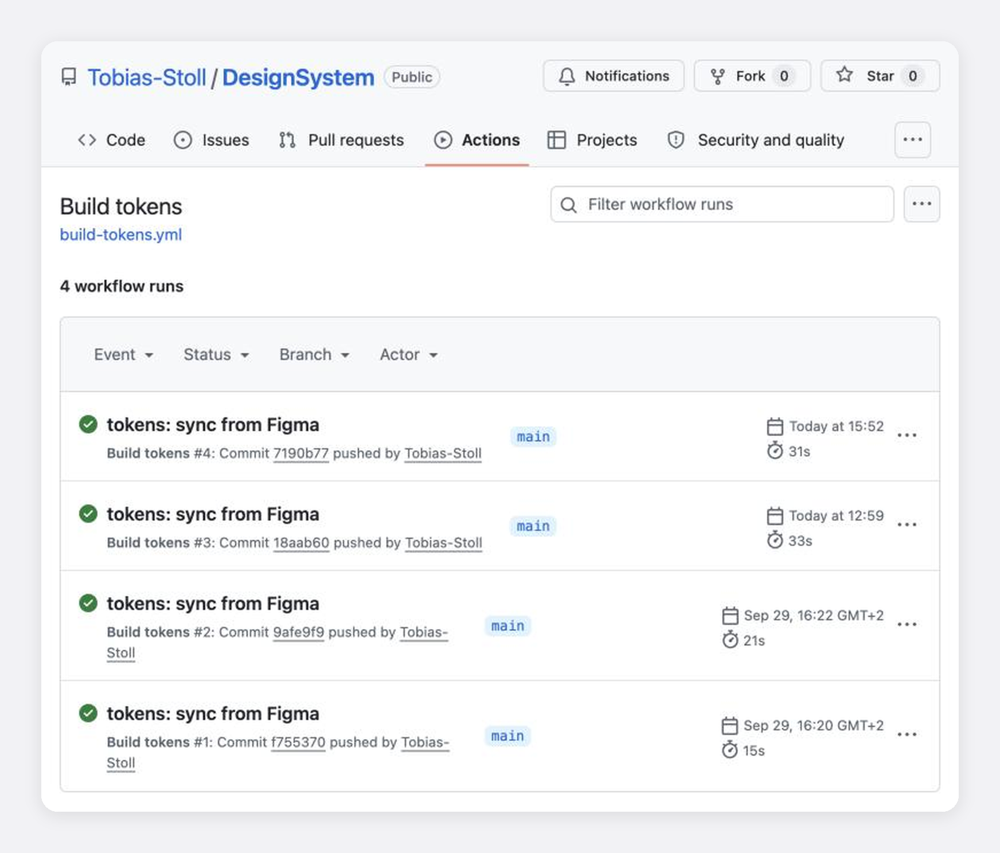
tokens.css and keeps the aliases as CSS variables. About 30 seconds per build.06 · Components read from Figma
The MCP sees bindings, not just pixels
Components are built in Figma with every value bound to a token. Claude then reads them through the Figma MCP, which returns not only how a component looks but what each layer is bound to.

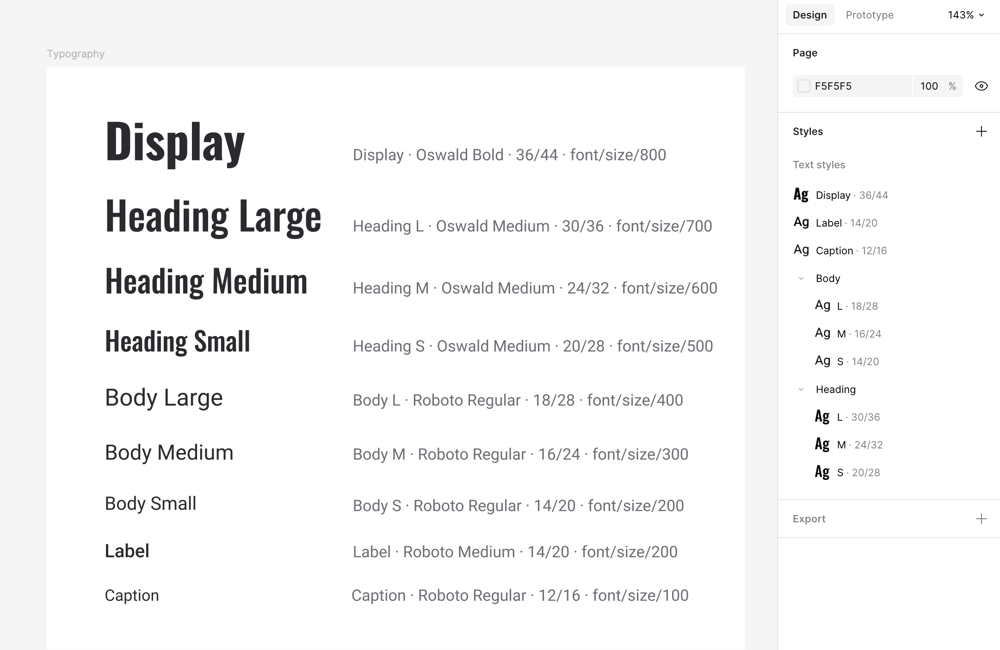

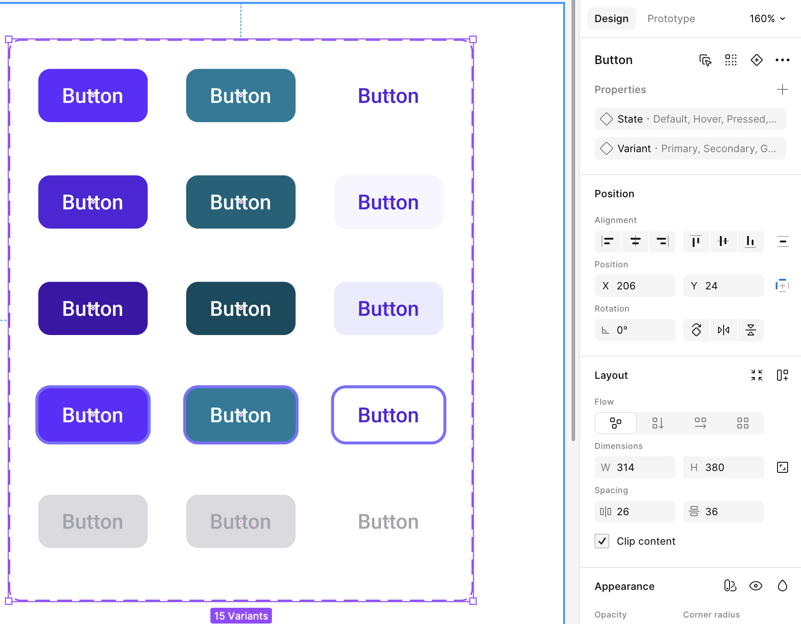

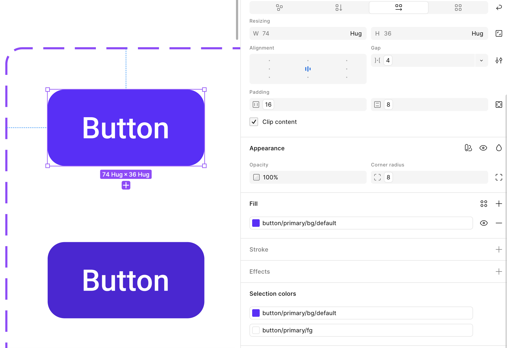
--button-primary-bg-default.Design QA with the MCP
The first MCP read of the Sign-up Card showed problems no screenshot would reveal:
- Variables from a foreign library (Figma's Simple Design System) instead of my own
- Mixed-up tokens: the card border bound to an input token, the input padding bound to a button token
- Values typed in by hand instead of bound
I fixed them in Figma, and a second read came back clean. Checking all other components the same way found two more things: the checkbox code had followed an old spec and was aligned to Figma, and the disabled label and property names were made consistent in Figma.
The MCP returns React and Tailwind as a reference. Claude translates it into this project's HTML and CSS and reuses what exists: the Sign-up Card is built from Form Field, Checkbox, Alert and Button, only the card layout is new.
07 · The live demo
My own lightweight Storybook
Every component page on the demo site has a playground, all states, copy-ready code and a live token table.

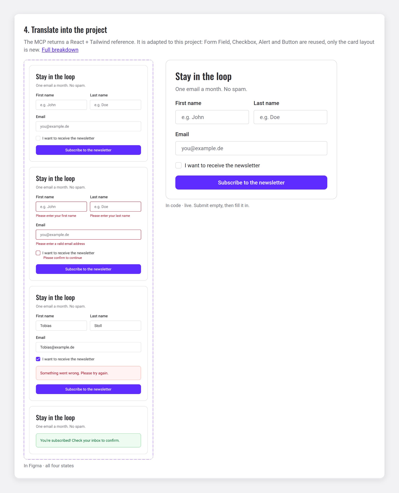

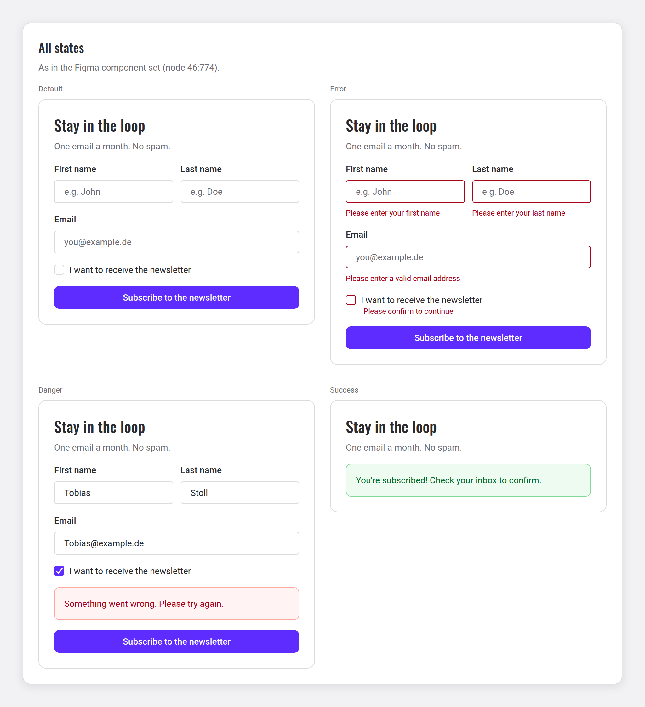
aria-invalid, aria-describedby and live regions.
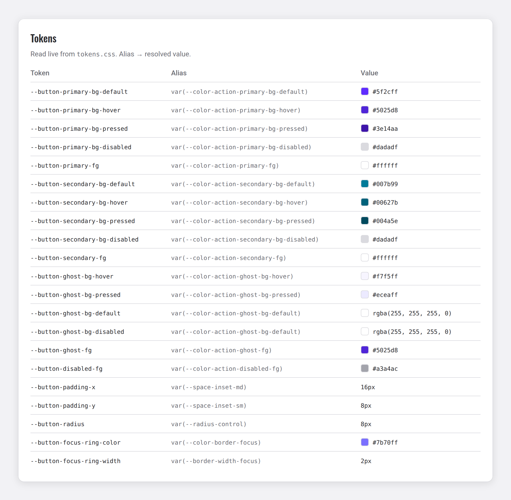

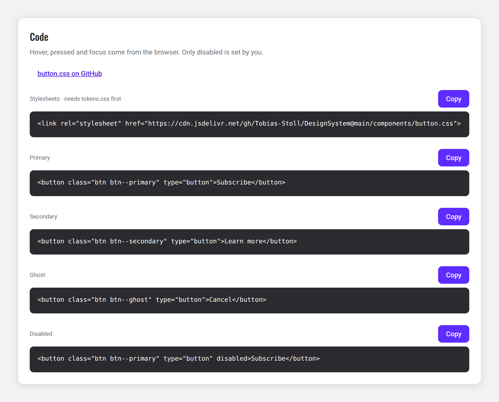
tokens.css, so the docs can't drift from the code. Every page ends with copy-ready markup and a CDN link.08 · Results at the client
Faster, and a system people understand
- A shared languageDesign and development use the same token names, from Figma to CSS.
- Fewer follow-up questionsDevelopers start from a ready repository instead of a handoff file.
- A defined set of tokensThe process showed which tokens and components were really needed, and the rest could go.
- Ready for AIA system this structured can be plugged into Claude directly, the next step I see.
09 · The way back
From code back to design
At the client, development took the ready repository, ran QA in code, and the result went back into Figma. In this rebuild that way back is a concept, not yet built.
10 · Learnings
What I would keep, and what's next
- The import is a naming check. Missing references pointed straight at naming mistakes in Figma.
- Renaming has a cost. Running the import again after renaming in Figma created duplicates. Names are a contract between design and code.
- One export, one commit. The first version created four commits per export; it now writes a single commit, and none when nothing changed.
- The MCP sees bindings, not just pixels. That turned design QA into a routine step instead of a visual guess.
- Showing everything finds errors. A page listing every token revealed a spacing value of 29 px under the name
space/20and a duplicated radius token. Both were fixed in Figma and exported in minutes.
What's next: Code Connect, to show the snippets directly in Figma's Dev Mode, and theming through variable modes.